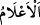

32. Denizde dağlar gibi akıp gidenler (gemiler) de O’nun (varlığının)
delillerindendir.
“Denizde dağlar gibi akıp giden gemiler de O’nun,” Allah’ın birliğini, kudretini,
azamet ve hikmetini gösteren “delilllerdendir.”
“__WORD__/â’lam”, dağ mânâsındaki “alem” kelimesinin çoğulu olup “dağlar” demektir.
Sadece yol işâreti olarak üzerinde ateş bulunan tepeler değil, mutlak olarak tüm dağlar
ve her yüksek tepe ‘alem kelimesiyle ifâde edilir. Bununla gemilerin “büyüklük ve
azamette dağlar gibi” olduğu anlatılır.
“__WORD__/cevâr” kelimesi ise yürüyen, akıp giden mânâsında “câriye”nin çoğuludur.
Âyette mukadder bir “__WORD__/gemiler” kelimesinin sıfatı olarak kullanılmıştır. Deniz
üzerinde cereyân etmesi, yürümesi ve akıp gitmesi sebebiyle gemiye bu isim verilmiştir.
33. Dilerse O, rüzgârı durdurur da onun (denizin) üstünde kalakalırlar. Elbette
bunda çok sabreden, çok şükreden herkes için ibretler vardır.
“Dilerse O” Allah gemiyi yürüten “rüzgârı durdurur,” geminin hareket etmesini
sağlayan rüzgârı sâkin kılar da gemiler “(denizin) üstünde kalakalırlar. Elbette
bunda” Allah’ın dilemesine göre bazen yürüyen, bazen de duran gemilerde Cenâb-ı
Hakk’a itâat yolunda belâlara “çok sabreden,” bütün âzâlarını yaratıldığı gayeye uygun
bir şekilde kullanmak sûretiyle “çok şükreden herkes için” Allah’ın şânına delâlet
eden büyük ve çok “ibretler vardır.”
Geminin durup sakinleşmesi Arapça’da “__WORD__ /rakadeti’s-sefînetü” tabiriyle
anlatılır. Yani hoş rüzgârlarla yürüyüp akıp giden o gemiler artık dururlar. Mânânın
özeti şudur: Artık bu gemiler denizin sırtında durakalırlar. Yürüyüp gitmezler. Yoksa
tamamen hareketsiz olurlar, demek değildir.
Şâirin ifâdesiyle:
Rüzgâr dindiği, gemiler durduğu için,
Gemide bulunanları derin bir ızdırap sardı.
Kâşifî şöyle demiştir: Elbette her sabreden ve şükreden için gemiden bir çıkış vakti
vardır.
Burada “sabreden” ve “şükreden” ifâdeleri, mükellefin yapması ve yapmaması